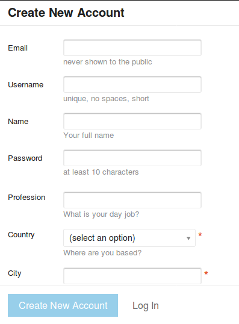

Usando o DiscussOKBr
A OKBr oferece um espaço de discussão principal, o DiscussOKBr, organizado por assuntos (tópicos), e onde os participantes de cada discussão se identificam e podem se expressar de forma mais rica e aprofundada, fazendo uso de texto formatado, imagens, links, etc.
discuss.okfn.org/c/local-groups/okbr = DiscussOKBr

É um espaço dentro do internacional Discuss.OKFN.org, onde escrevemos em português e os tópicos são relativos ao Brasil e à OKBr. Qualquer pessoa pode se cadastrar e participar! Não precisa ser associado da OKBR, nem preencher longos formulários.
Navegando até o DiscussOKBr
Pelo site da OKBr:
O site da OKBr apresenta em todas as páginas uma barra superior com ícones, clique no primeiro, que é o ícone do DiscussOKBr.

Pelo próprio Discuss:
O site geral de discussões da Open Knowledge Nerwork é o discuss.okfn.org, nele é só procurar pela categoria Local Groups e subcategoria Brasil (OKBr), ao descer um pouco na primeira página (ou depois de clicar no botão vermelho "Categories").

Primeiro passo
O DiscussOKBr abre sempre com essa página.
Grupo ou tópicos mais específicos
As discussões ativas e mais recentes são listadas logo abaixo.
Caso não seja uma delas que procura, pode-se fazer uma busca, após clicar no ícone da lupa na barra superior.
Primeira vez
Quando você navega pela primeira vez, ou navega sem estar logado, aparecem na barra superior os botões “Sign Up” para se cadastrar, e “Log In” para quem já se cadastrou indicar que quer entrar.
Como é a primeira vez, clique em “Sign Up”.
Cadastro automático
Se você já é usuário de plataformas como Facebook ou Github, pode se cadastrar automaticamente sem preencher cadastro algum e mantendo o esquema de autenticação da sua plataforma preferida.

Neste caso basta escolher o botão desejada, apresentado logo no início, e pronto!
PS: é seguro, endossamos o processo e a equipe que mantém as bases de dados da OKFN em sigilo.
Cadastro completo
Como opção ao cadastro automático, pode-se fazer uso do tradicional: são 9 ou 10 campos, com apenas 3 deles obrigatórios.
Ao final do preenchimento, clique em “Create New Account”

Logando
Uma vez sendo cadastrado, pode usar o botão “Log In”.
Vai abrir a janela ilustrada abaixo. São 3 opções, use a opção que adotou no cadastro:
-
Quem cadastrou via Github, só clicar no ícone do Github.
-
... Google, só clicar no ícone do Google.
-
Quem cadastraou de forma independente, usar seu username e senha, depois clicar no "Log in".
Para os dois primeiros casos, se já estiver logado em outra aba, é automático. Caso contrário, vai aparecer uma tela de login com ícone da plataforma (na ilustração abaixo Github).
Navegando logado
Quando navegamos logados pelo DiscussOKBr, aparece no canto superior direito a sua foto ou um ícone com a sua inicial (ex. “P”).
Clicando no seu ícone vão aparecer logo abaixo o seu username e três ícones (passe o mouse em cima),
-
Bookmaks (favoritos)
-
Messages (correio interno)
-
Preferences
e ainda uma de avisos, no final o “Log Out” para sair.

Uma vez logado, você pode participar (!), veja como é fácil.
Outras dicas
Ainda logado, no final de cada tópico aparece, além do botão de "Reply", uma série de botões, conforme ilustrado abaixo. Passe o mouse devagar por cima para ver a descrição, ou mesmo clique em qualquer um deles (sem medo!).
-
"Bookmark": é um recurso interno de favoritos, para memorizar no seu login o que pretende ler mais tarde.
-
"Share": permite você copiar e colar por exemplo no chat ou e-mail a URL (endereço internet) daquele tópico.
-
"Flag": abre um formuário para você notificar em sigilo sobre algum tipo de problema com o post (propaganda, fora de tópico, etc.).
-
"Invite": permite você copiar e colar por exemplo no chat ou e-mail a URL (endereço internet) daquele tópico.
-
"Tracking": permite você copiar e colar por exemplo no chat ou e-mail a URL (endereço internet) daquele tópico.
Importante: agora que logou, veja como é fácil participar das discussões.